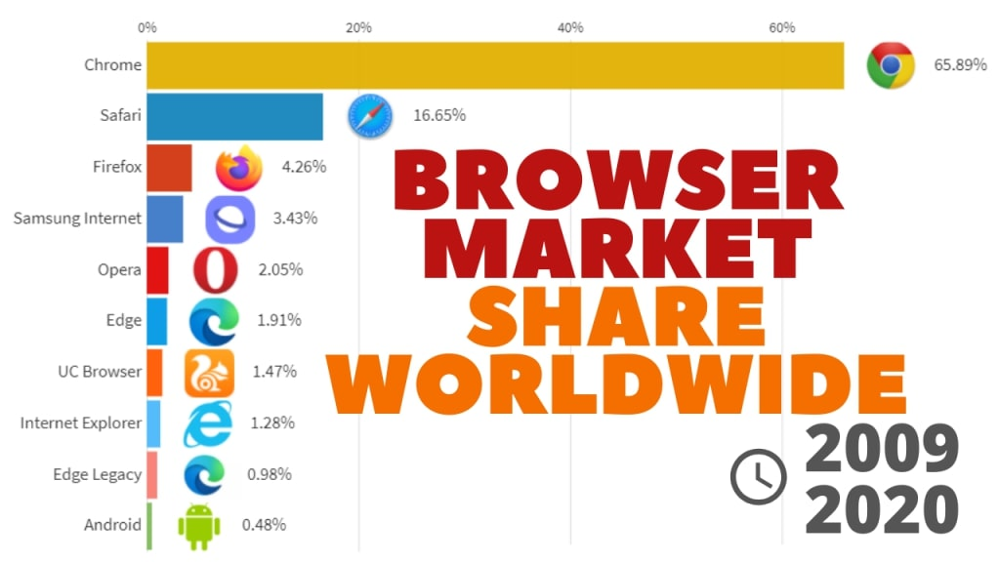
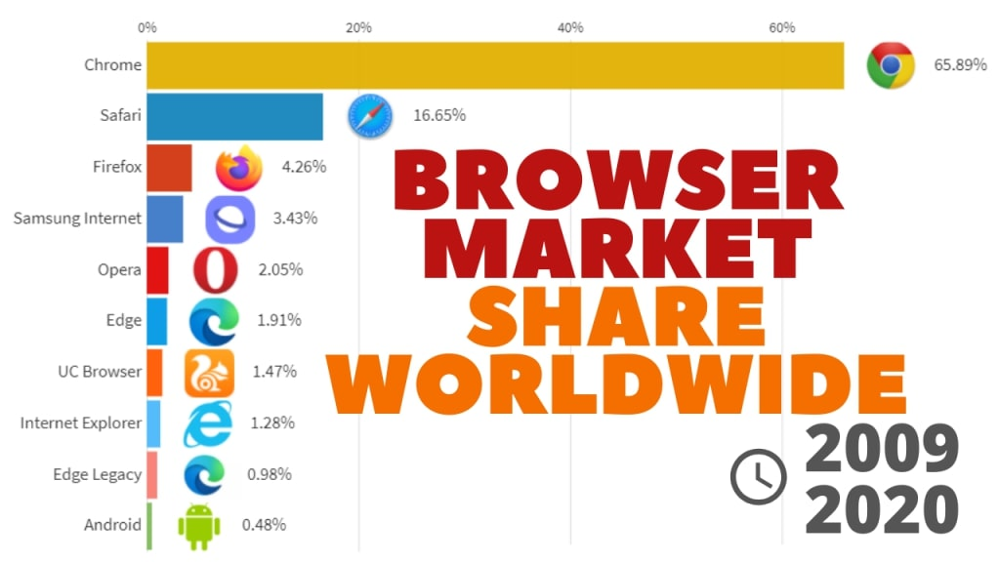
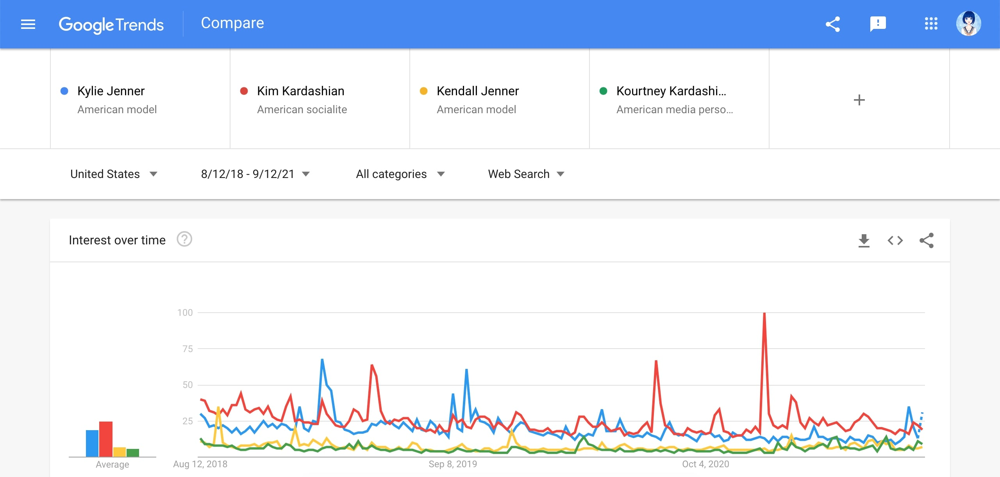
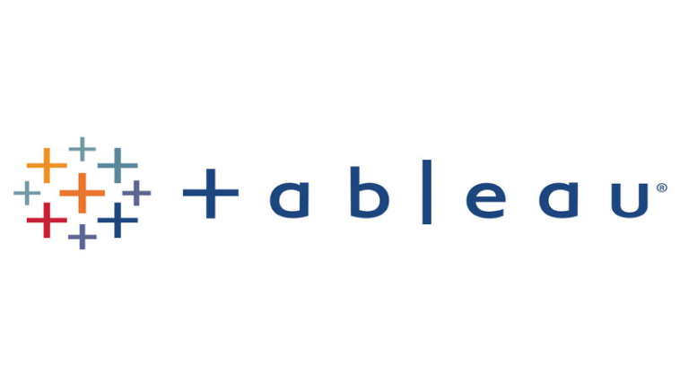

Đóng vai trò của một Nhà khoa học dữ liệu làm việc cho một công ty khởi nghiệp có ý định cạnh tranh với SpaceX. Chúng ta sẽ cùng thu thập dữ liệu (sử dụng REST API and web scraping), xử lý và phân tích dữ liệu, trực quan hóa dữ liệu, phát triển mô hình, đánh giá mô hình và báo cáo kết quả.
 

Trong project này, chúng ta sẽ dùng PYTHON để phân tích thị phần trình duyệt web trong giai đoạn 2004-2020 với dữ liệu từ Google Trends. Tìm hiểu về mức độ phổ biến trên toàn thế giới của 5 trình duyệt chính (Mozilla Firefox, Apple Safari, Google Chrome, Microsoft Internet Explorer và Opera) theo thời gian sử dụng

Trong project này, ta sẽ dùng PYTHON để khám phá dữ liệu tìm kiếm về danh tiếng của gia đình Kardashian, tìm hiểu xem sự nổi tiếng của chị em nhà Kardashian / Jenner đã thay đổi như thế nào theo thời gian?
Trong project này, chúng ta sẽ dùng PYTHON để xây dựng một bộ từ khoá cho chiến dịch quảng cáo của một công ty bán lẻ đồ nội thất trực tuyến. Đây là một nhà bán lẻ giá rẻ, cung cấp nhiều chương trình khuyến mãi và giảm giá. Ta sẽ cần tập trung vào các từ khóa về giá rẻ và tránh xa các từ khóa về chủ đề xa xỉ, vì ta nhắm mục tiêu đến những khách hàng nhạy cảm về giá.

COVID-19 đã từ một dịch bệnh trở thành đại dịch toàn cầu. Từ ca F0 đầu tiên được xác định vào tháng 12 năm 2019, virus đã lây lan nhanh và rộng như thế nào?
Trong R project này, chúng ta sẽ trực quan hóa dữ liệu từ những tháng đầu của đợt bùng phát coronavirus để xem loại virus này đã trở thành một đại dịch toàn cầu như thế nào?
Tỉ lệ Sharpe (tiếng Anh: Sharpe Ratio) là một thước đo xem lợi nhuận thu được là bao nhiêu trên một đơn vị rủi ro khi đầu tư vào một tài sản hay đầu tư theo một chiến lược kinh doanh.
Trong Project này, chúng ta sẽ dùng PYTHON để phân tích tỷ lệ Sharpe thông qua cổ phiếu của hai gã khổng lồ về công nghệ Facebook và Amazon. S&P 500 sẽ được dùng làm điểm chuẩn để đo lường hiệu suất của 500 cổ phiếu lớn nhất ở Mỹ. Liệu đầu tư vào Amazon có hấp dẫn hơn vào Facebook?

Trong dự án này, chúng ta sẽ dùng SQL phân tích dữ liệu nợ quốc tế do World Bank thu thập. Tập dữ liệu chứa thông tin về số nợ (tính bằng USD) của các nước đang phát triển ở một số danh mục. Chúng ta sẽ tìm câu trả lời cho những câu hỏi như:
Tổng số nợ của các quốc gia trong file dữ liệu là bao nhiêu?
Quốc gia nào sở hữu số nợ lớn nhất và cụ thể là bao nhiêu?
Số nợ trung bình của mỗi quốc gia qua các chỉ số nợ khác nhau như thế nào?

Trực quan hoá dữ liệu về COVID-19 với Tableau